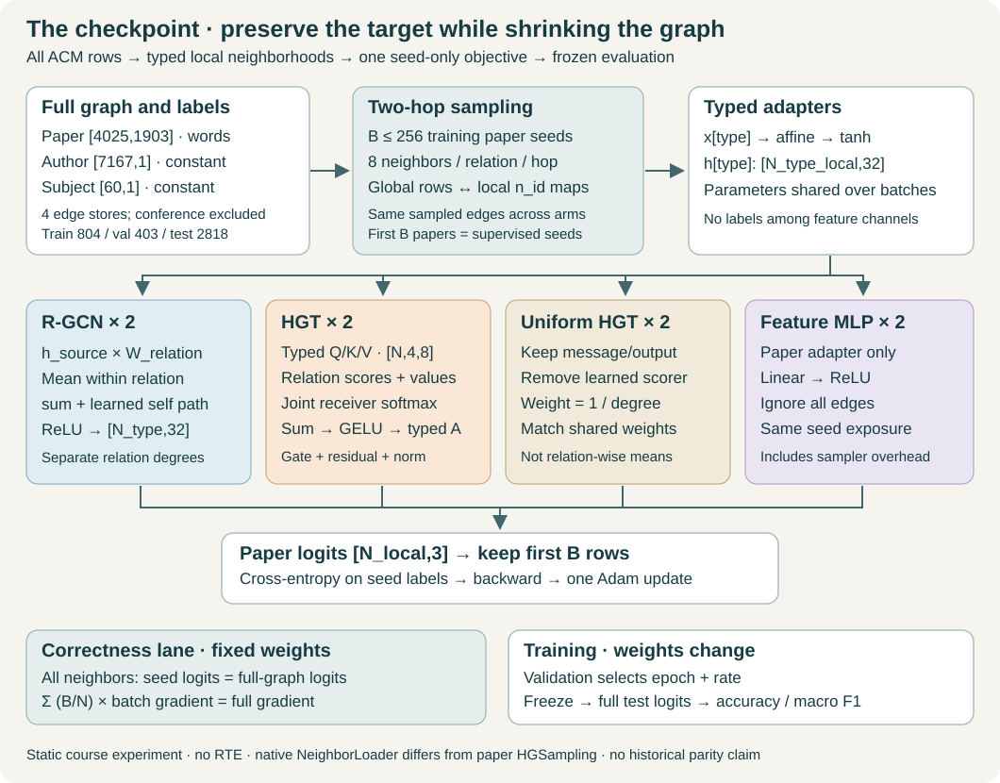
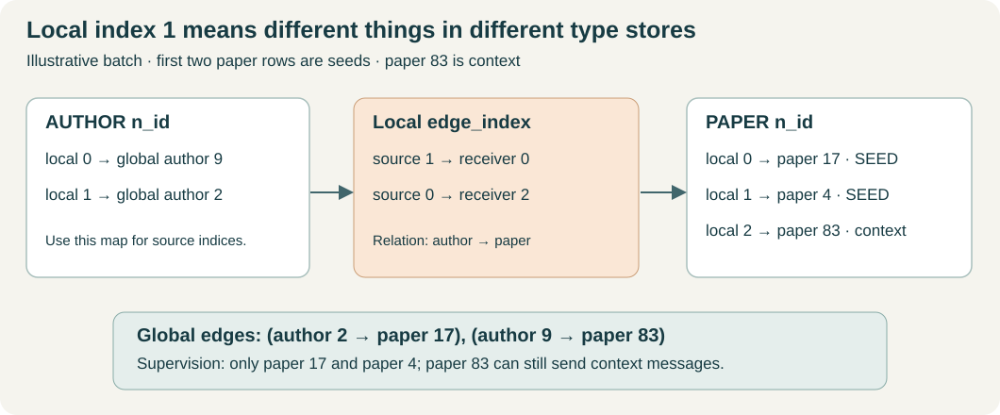
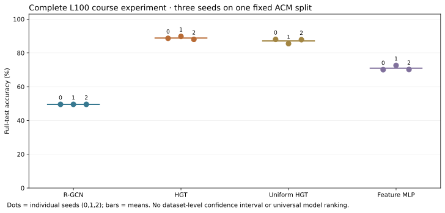

Year 3 · Quarter 2 · Lesson 100
Heterogeneous GNN checkpoint: defend the whole pipeline
Student notebook · Executed solution · Read the lab · Reproduction contract
1 · Close the notes: retrieve before building¶
Write four answers before opening the feedback. From L091, what is the denominator of a relation-wise mean? From L096, can author row 4 and paper row 4 be the same node? From L098, which sampled nodes receive supervised loss? From L099, what extra experiment is needed before attributing an HGT advantage to learned attention?
Feedback — open after answering
R-GCN divides by the receiver's degree within that relation, then sums relation contributions. A node identity is (type, row ID). Only the input seed prefix receives the batch loss. A uniform-attention HGT intervention narrows the attention question; comparing two architecture families changes several operators at once.
This is the Year 3 Q2 checkpoint. You already have individual operators, typed graph construction, sampling and comparison discipline. The tangible new skill is joining them into one pipeline whose result survives an audit. This supports the mission: explain learned relational systems without hand-waving, and eventually evaluate them on real relational benchmarks.
A suggested route is retrieval and the worked trace first; then the notebook tasks; then the complete experiment and written defense. The experiment can run while you prepare your protocol table. A prepared solution does not demonstrate your mastery.
2 · The integration gap¶
L098 checked native sampling on a generated three-type graph. L099 compared models on a real graph using full-graph updates. Neither alone establishes that the comparison remains correct after local node renumbering, seed masking and finite neighborhood sampling are combined.
In plain terms. A sampler makes a small working copy of the neighborhood. Its row numbers change. Its context nodes are useful inputs, but they do not all become training targets.
We use every conference-filtered ACM paper from the pinned DGL loader: 4,025 papers, 7,167 connected authors and 60 connected subjects. Paper features are 1,903 row-normalized word counts. Author and subject features are constant ones. Four directed edge stores represent paper→author, its reverse, paper→subject and its reverse. They contain 34,864 directed edges in total.
The target is a three-class conference grouping. Conference membership supplies labels and is excluded from every input edge store and feature. Otherwise the graph would contain the answer. The fixed course split contains 804 training papers, 403 validation papers and 2,818 test papers.
Transductive means all graph features and edges are available when learning, including those of held-out papers. Their labels remain excluded from the training objective. This is a static information contract; it is not a future-prediction claim. L101 in the roadmap adds the harder question of when an edge or feature becomes available.
3 · Model architecture: a sampled computation with a fixed target boundary¶

Follow one seed through the two layers¶
Sample backward from the target. Start with up to 256 training paper IDs. For each relation, the native loader samples at most eight incoming neighbors without replacement at each of two hops. A fanout is that per-receiver, per-relation limit. Two hops cover the dependencies of two message-passing layers. See the NeighborLoader contract.
Compute forward over local rows. Each type has its own feature matrix [N_type_in_batch, input_width]. A type-specific affine adapter followed by tanh produces width 32. The same learned parameters are reused across batches. Edges use the batch's local row indices. They connect vectors inside this working graph, not arbitrary rows from the full tables.
R-GCN branch. For each receiver and relation, transform source vectors with that relation's matrix and average them. Sum the separate relation means, add the learned self transformation and apply ReLU. Repeat for layer two. This is the relation-normalized computation in Schlichtkrull et al., Eq. 2. The course wrapper adds feature adapters and a classifier; the named AIFB experiment has its own release architecture.
HGT branch. A head is one attention subspace; here four heads each have eight coordinates. Type-specific query, key and value projections produce the receiver query and source key/value. Relation-specific matrices transform keys and values. Dot-product scores, relation priors and division by √8 feed a softmax over all incoming edges for a receiver and head. The weighted message sum passes through GELU and a type-specific output map, then a learned gated residual and node-wise LayerNorm. Repeat twice. Hu et al., §3 motivates the typed attention route; the implementation follows the explicitly pinned modern release.
Two controls. Uniform HGT removes the score machinery and gives every incoming edge equal weight, retaining the message/output/residual route. Every common initial tensor matches HGT. The MLP uses paper features and ignores edges. It receives the same seed batches so its target exposure and update count match.
Predict and train. The classifier produces three logits per local paper. A logit is an unnormalized class score. Cross-entropy is the negative log probability assigned to the correct class after softmax. Only the first B paper logits belong to the requested training seeds. Context papers participate in message passing but contribute no direct label loss.
Scope check. Native NeighborLoader is the controlled course sampler. It is not the paper's HGSampling algorithm. Static ACM has no relative temporal encoding. The full HGT CS lane retains its distinct sampler, time encoding, task and protocol.
4 · Worked trace: recover identities before trusting a score¶
Worked example. A batch has paper n_id = [17, 4, 83] and author n_id = [9, 2]. Here n_id maps local rows to global IDs within a type. Suppose there are two seed papers. The third paper, global ID 83, is context.
| Local author→paper edge | Global typed edge | Direct label loss? |
|---|---|---|
| source 1 → receiver 0 | author 2 → paper 17 | Paper 17 is a seed |
| source 0 → receiver 2 | author 9 → paper 83 | Paper 83 is context |
The first endpoint must be looked up in the author map. The second must be looked up in the paper map. Applying the paper map to both endpoints creates plausible integers with incorrect meaning. The lab checks reconstructed endpoints against the original edge store indexed by e_id, the loader's original-edge map.

Your first two tasks: implement global_edges, then seed_loss. The CHECK cells use deliberately different ID maps and change context labels. Correct seed loss remains unchanged; gradients on context output rows are zero. Context features can still receive gradients through their messages. No-gradient-on-context-logits is not no-learning-from-context.
5 · Three different claims about mini-batching¶
Claim A: the same seed prediction¶
With all neighbors retained (fanout=-1), two sampled hops should reproduce each seed's two-layer full-graph prediction. This relies on having the complete relevant incoming neighborhoods, the same weights, no dropout and node-wise normalization. A graph-wide normalization layer or an insufficient number of sampled hops would require a different argument.
The audit compares float64 computations at a frozen absolute tolerance of 2e-6. It checks an adversarial fixture with an isolated paper and empty relations, then 23 fixed training seeds on the full real ACM graph at batch sizes 1, 7 and 23. These probes test integration; they are not an exhaustive proof over every possible batch.
Claim B: the same accumulated gradient¶
A batch loss is a mean over its B seeds. An epoch objective is a mean over N seeds. To recover the full objective, multiply each batch mean by B/N, add the results, and differentiate while holding the parameters fixed.
Worked example. Five individual losses are [0.2, 0.8, 0.5, 1.1, 0.4]. A batch size of three gives means 0.50 and 0.75. Their equally weighted mean is 0.625. The correct mean is (3/5)×0.50 + (2/5)×0.75 = 0.60. The shorter final batch must not receive the weight of a full batch.
Your third task implements batch_weight. It is used by both the gradient audit and the reported epoch loss. For the real training split, the four batches have sizes 256, 256, 256 and 36. Equal averaging would over-weight the final 36 seeds.
Claim C: the same optimizer trajectory¶
The audit does not step the optimizer between batches. The experiment does. Adam changes the weights and its moving state after each batch mean. Later gradients are therefore evaluated at different weights. Even all-neighbor sampling does not make those four steps identical to one full-batch step.
Finite fanout introduces another difference: the model sees a sampled neighborhood. A sampled mean may estimate a linear neighborhood mean under suitable sampling, but a nonlinear multi-layer prediction or attention normalization need not be an unbiased estimate of the full-graph prediction. Neither equal sample counts nor close scores establishes that property.
6 · Freeze the comparison before seeing test results¶
The experiment asks a narrow question: under this graph, split and fixed training budget, what does each complete prediction route achieve? The uniform-HGT intervention asks a narrower mechanism question inside the HGT family.
| Decision | Frozen rule |
|---|---|
| Information and targets | Same complete ACM graph, features and split for all arms |
| Sampling | Fanout 8 at two hops; batch 256; no replacement; directional edges |
| Paired samples | Seed order and sampled-edge fingerprints match across arms and rates for each seed/epoch |
| Model | Width 32, depth 2, HGT heads 4, dropout 0 |
| Training | Adam, weight decay .001, all 40 epochs, four updates per epoch |
| Search | Rates .003 and .01; seeds 0, 1 and 2 for each of four arms; 24 fits |
| Checkpoint | Earliest strictly lowest full-graph validation cross-entropy |
| Rate selection | Lowest mean selected validation loss across three seeds; smaller rate breaks ties |
| Test | Score selected checkpoints on the same complete test set after selection is frozen |
| Reporting | Accuracy, macro F1, individual seeds, paired differences, parameter counts and elapsed time |
Macro F1 averages per-class F1 scores with equal class weights. For each class, F1 is 2TP/(2TP+FP+FN), with zero for an undefined denominator. Sample SD describes variation across these three initialization/sampling seeds. It does not describe variation across datasets or unknown future populations.
Sampling uses a separately reset epoch RNG: 100000 + 1000×seed + epoch_index. Matching a seed label alone would be insufficient if different model initializations consumed different amounts of randomness. We also compare actual sample hashes across all eight fits associated with each seed. Uniform HGT copies common initial weights from HGT before training.
Equal width, update count and search size do not give equal parameter counts, FLOPs or optimization quality. The MLP still pays sampler overhead in this harness, so elapsed times are pipeline measurements, not isolated model-speed benchmarks. Validation and final test inference use the full graph; this course experiment does not establish a scalable all-sampled deployment.
7 · Inspect the measured evidence¶
Before opening the result table, predict which comparison could justify a statement about learned attention. Then explain one alternative explanation for a family-level difference.
| Arm | LR | Accuracy mean ± seed SD | Macro F1 mean | Parameters | Seconds per selected fit |
|---|---|---|---|---|---|
| rgcn | 0.003 | 49.54% ± 0.00 pp | 0.2209 | 71,459 | 6.58 |
| hgt | 0.003 | 88.81% ± 0.90 pp | 0.8878 | 91,017 | 18.26 |
| hgt_uniform | 0.003 | 87.11% ± 1.41 pp | 0.8701 | 76,265 | 12.04 |
| mlp | 0.003 | 70.96% ± 1.42 pp | 0.6305 | 63,139 | 3.47 |
| Seed | HGT − R-GCN | HGT − uniform HGT | HGT − MLP |
|---|---|---|---|
| 0 | +39.11 pp | +0.64 pp | +18.56 pp |
| 1 | +40.24 pp | +4.29 pp | +17.18 pp |
| 2 | +38.47 pp | +0.18 pp | +17.81 pp |
Author-reference evidence: all 24 fits, 960 epochs and 3,840 optimizer updates completed. HGT exceeds the uniform ablation by 1.70 percentage points on average here. This is conditional evidence under one fixed protocol, not a universal attention benefit. R-GCN predicts the majority class for all test papers in every selected run (49.54% accuracy); its failed learning trajectory limits the family comparison. The experiment is retained as specified.

A weak R-GCN result under this fixed budget does not establish that relation-specific models are intrinsically weak. Optimization, the constant auxiliary features, the split and the wrapper all matter. An attention ablation changes parameter count and training dynamics as well as the weighting rule. Carry these limitations into the attribution table, rather than deleting an inconvenient result.
L099 used 60 full-batch steps; L100 uses 160 mini-batch steps and finite fanout. Comparing their scores changes several factors simultaneously. It is not a clean estimate of the causal effect of sampling. A follow-up would hold the optimizer/update schedule fixed and vary the sampler, using new validation-only decisions.
8 · Full reproduction: inspect the target, protocol and executed coverage¶
The R-GCN paper and HGT paper introduce methods and multiple experiments. Completing our checkpoint does not reproduce all those experiments.
| Evidence lane | What is provided | What it establishes |
|---|---|---|
| ACM checkpoint | All 24 fresh course fits, 960 epochs, 3,840 updates; traces/checkpoints/predictions | The complete declared course experiment, not a published table |
| R-GCN AIFB | Fresh ten-run full release-protocol port, original 140/36 split and full graph | A named published target comparison; historical identity remains INCOMPARABLE |
| HGT CS Table 2 | Full-setting model/sampler/trainer, pinned 8.1 GiB data identity, five-seed local/Modal/notebook commands | Runnable reconstruction track; full training NOT_RUN |
| Entire original papers | Other tasks/datasets and historical tuning/backend remain outside executed coverage | Full-paper parity NOT_ESTABLISHED |
The fresh AIFB mean is 95.8333%, with 1.4640 percentage points sample SD across ten runs. The Table 2 target is 95.83%. Numerical closeness is a useful observation; it does not identify the historical graph bytes, RNG sequence or Keras/Theano execution. The lab appendix visibly includes the complete AIFB implementation and trainer.
For HGT, CS Paper–Field L2 targets NDCG .403 ± .041 and MRR .439 ± .078 across five trainings. The course's full-setting port uses width 256, three layers and eight heads, with the source/deviation ledger linked below. The modern source differs from the archived publication-era code. L093 previously recorded a 10 GiB guarded load failure and a Modal GPU payment-method rejection. These are prior findings, not a fresh capacity experiment here. We do not relabel ACM, NN or a single update as the CS result.
The full contract records hashes, exact commands, model/optimizer/data/split/metric differences and delivery evidence. The standalone notebook contains the full visible CS implementation in a gated appendix. Turning on a flag does not upgrade a verdict; completed evidence must do that.
9 · EXIT: defend the pipeline¶
Submit the three task implementations, your fresh JSON evidence and an attribution table with columns observation / held fixed / changed / alternative explanation / justified conclusion. Include one row for HGT versus R-GCN, one for HGT versus uniform HGT and one for the all-neighbor parity audit.
Defend these five questions without reopening the solution:
- Trace one sampled edge from local indices to global typed IDs, then through both layers to a seed prediction.
- Explain why a context paper can send useful messages while its label remains excluded from the batch objective.
- Derive the
B/Nweight for an incomplete final batch. State exactly when accumulated gradients match and when optimizer trajectories can differ. - Use the paired results to distinguish an architecture gap from an attention effect. Name one unresolved confound and one useful next experiment.
- Explain why complete ACM execution, close AIFB scores and an unrun HGT CS operator have different reproduction statuses.
The teacher scores five axes 0–2: identity/graph contract; sampling/loss correctness; reproducible execution; comparison reasoning; reproduction defense. A checkpoint pass requires at least 8/10 and no zero in correctness or reproduction defense. Until your own artifacts and explanation are reviewed, status remains PENDING_WRITTEN_DEFENSE.
Ask the agent follow-up questions about any unclear step, or paste your EXIT evidence for a strict defense. Revisit the identity trace tomorrow and the gradient-versus-update distinction in a week. Next, the temporal quarter asks whether each input existed at prediction time—an issue this static checkpoint deliberately leaves open.